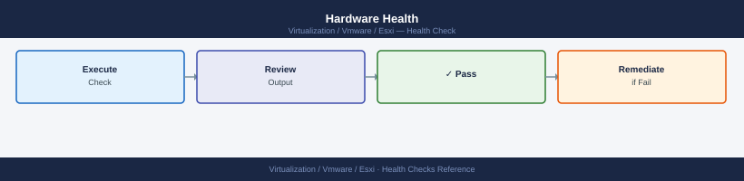

ESXi — Health Checks¶
Daily and weekly health runbook for ESXi hosts: hardware sensors, service status, storage paths, network uplinks, NTP sync, VIB compliance, and capacity thresholds — with a runnable command sequence and per-area deep-dive checks.
*Applies to: vSphere 7.x / 8.x*
Before you begin¶
- Access: vCenter read-only minimum; Administrator role for remediation steps
- Timing: safe to run during business hours unless a step is marked ⚠ (causes interruption)
- Dependencies: no active upgrades or migrations on the same infrastructure
- Logging: capture command output — paste into the change record on completion
Run This Routine¶
Run these commands in sequence for a complete ESXi health snapshot. Each block can be pasted directly into an SSH session on the host or run via PowerCLI.
# 1. Verify ESXi version and build
vmware -vl
# 2. Host hardware summary — vendor, model, serial
esxcli hardware platform get
# 3. Network adapter (vmnic) status — check link state and speed
esxcli network nic list
# 4. VMkernel adapter list — IPs, MTU, enabled services
esxcli network ip interface list
# 5. Storage adapter health — HBAs, iSCSI, NVMe controllers
esxcli storage core adapter list
# 6. Storage paths — look for 'dead' state
esxcli storage core path list | grep -i dead
# 7. Datastore accessibility — mount state and capacity
esxcli storage filesystem list
# 8. NTP sync status
esxcli system ntp get
esxcli system time get
# 9. Host services — verify hostd, vpxa, fdm running
esxcli system process stats load get
/etc/init.d/hostd status
/etc/init.d/vpxa status
/etc/init.d/fdm status
# 10. Recent syslog errors
tail -100 /var/log/syslog.log | grep -iE "error|critical|warning"
# 11. Installed VIB count — baseline for patch drift detection
esxcli software vib list | wc -l
Expected output
VMware ESXi 7.0.3 build-19193900
Product: VMware ESXi
Version: 7.0.3
Build: 19193900
Update: 3
Patch: ESXi703-202301001
Platform Information
Hardware Vendor: Dell Inc.
Hardware Model: PowerEdge R750
System Serial: 1N2M3P4Q5R6S7T8U
BIOS Version: 2.15.2
BIOS Release Date: 2023-06-15
Name Driver Link Speed Duplex MTU Enabled
------ ---------- ---- ----- ------ --- -------
vmnic0 bnx2x Up 10000 Full 1500 True
vmnic1 bnx2x Up 10000 Full 1500 True
vmnic2 ixgbe Down 0 Half 1500 True
vmnic3 ixgbe Up 10000 Full 1500 True
Name IPV4Address Netmask MTU Enabled Portgroup
------ --------------- --------------- --- ------- ---------
vmk0 192.168.1.45 255.255.255.0 1500 true Management Network
vmk1 10.20.30.100 255.255.255.0 9000 true vMotion
vmk2 10.20.40.50 255.255.255.0 9000 true vSAN
HBA Name Driver Model State
--------- ---------- ----------------------- -------
vmhba0 lpfc Emulex OneConnect OCe14102 online
vmhba1 megaraid_sas Dell PERC H755 Adapter online
vmhba2 iscsi iSCSI Software Adapter online
(no output — no dead paths detected)
Mount Point Volume Name Capacity Free Space
------------------------------ ------------------- ----------- ----------
/vmfs/volumes/datastore1 datastore1 10.0 TB 3.2 TB
/vmfs/volumes/datastore2 datastore2 5.0 TB 1.8 TB
/vmfs/volumes/datastore-vsan vsan-cluster 20.0 TB 8.5 TB
NTP Enabled: true
NTP Servers: 10.0.0.1, 10.0.0.2
Current Time: 2024-01-15T14:32:47Z
2024-01-15T14:32:47Z
Uptime: 45 days, 3 hours, 22 minutes
Load average: 0.45, 0.38, 0.42
running
running
running
2024-01-15 14:28:12 esxd: WARNING: NIC vmnic2 link down detected
2024-01-15 14:15:03 hostd: ERROR: Unable to connect to vpxa on host esx-prod-02.lab.local
2024-01-15 13:42:19 kernel: CRITICAL: Storage adapter vmhba1 command timeout
487
Common errors
| Error | Fix |
|---|---|
esxcli: command not found |
SSH into |
Hardware Health¶

Sensor Status¶
# Full hardware health summary (CPU, memory, fan, PSU, temperature)
esxcli hardware ipmi sdr list | grep -iE "critical|warning|nc"
# Specific component checks
esxcli hardware cpu list # CPU package info
esxcli hardware memory get # RAM installed
esxcli hardware pci list | grep -i "hba\|nic\|nvme" # PCI devices
# Boot media S.M.A.R.T. check (USB/SD boot media or local SSD)
esxcli storage core device smart get -d <device-name>
Expected output
Critical | 0x41 | CPU1 Temp | 89.0°C | ok
Warning | 0x42 | PSU1 Status | 12.5V Rail | warning
Critical | 0x43 | Fan Module 3 | 8500 RPM | critical
NC | 0x44 | System Temp | 72.0°C | ok
CPU Package 0
Vendor: Intel
Hz: 2400000000
Bus MHz: 100
Cache Size: 20480 KB
Memory Configuration
System Memory Size: 262144 MB
Memory Type: DDR4
0000:01:00.0 Broadcom Inc. and subsidiaries: NetXtreme BCM57810 10 Gigabit Ethernet (rev 10)
0000:02:00.0 Broadcom Inc. and subsidiaries: NetXtreme BCM57810 10 Gigabit Ethernet (rev 10)
0000:03:00.0 Emulex Corporation: OneConnect 10Gb NIC (rev 02)
0000:04:00.0 NVIDIA Corporation: Tesla V100 GPU (rev a1)
Device: mpx.vmhba0:C0:T0:L0
Health Status: PASSED
Predictive Failure Analysis: Not Supported
Common errors
| Error | Fix |
|---|---|
Error: Unknown command or namespace 'hardware ipmi sdr' |
Verify IPMI is enabled in BIOS and the ESXi host has IPMI hardware support; if not available, use esxcli hardware sensors list instead. |
Error: Unknown device '<device-name>' |
Replace <device-name> with the actual device identifier (e.g., mpx.vmhba0:C0:T0:L0) found via esxcli storage core device list. |
Error: SMART data is not available for this device |
Confirm the device supports S.M.A.R.T. monitoring; some enterprise SSDs or RAID controllers may not expose this data directly to ESXi. |
| Sensor category | Alert threshold | Action |
|---|---|---|
| CPU temperature | > 80°C | Check datacenter cooling, BIOS throttling |
| Memory ECC errors | Any correctable/uncorrectable | Replace DIMM; plan maintenance |
| Fan failure | Any fan speed = 0 or critical | Replace fan, monitor temperature |
| PSU redundancy | Redundancy lost | Replace failed PSU before primary fails |
| Boot media health | S.M.A.R.T. reallocated sectors > 0 | Schedule boot media replacement |
Host Connection and Service Health¶
# Check hostd (management daemon) — restart if unresponsive
/etc/init.d/hostd status
/etc/init.d/hostd restart # only if genuinely unresponsive
# Check vpxa (vCenter agent) — needed for vCenter connectivity
/etc/init.d/vpxa status
# Check fdm (HA agent) — needed for vSphere HA
/etc/init.d/fdm status
# Confirm host is Connected in vCenter via PowerCLI
Get-VMHost | Select-Object Name, ConnectionState, PowerState
Expected output
hostd is running.
hostd stopped.
hostd started.
vpxa is running.
fdm is running.
Name ConnectionState PowerState
---- --------------- ----------
esx-prod-01.lab.local Connected PoweredOn
esx-prod-02.lab.local Connected PoweredOn
esx-prod-03.lab.local Connected PoweredOn
Common errors
| Error | Fix |
|---|---|
hostd is not running |
Run /etc/init.d/hostd start to restart the management daemon. |
vpxa is not running |
Restart vpxa with /etc/init.d/vpxa start and verify vCenter connectivity in the ESXi host summary. |
Get-VMHost : The term 'Get-VMHost' is not recognized |
Install PowerCLI module with Install-Module -Name VMware.PowerCLI -Force or run the command from a Windows machine with PowerCLI installed. |
Network Health¶
Uplink and VMkernel¶
# Check all vmnic uplinks — Speed/Duplex should show link speed, not 0/Half
esxcli network nic list
# Check for packet errors and drops on each vmnic
esxcli network nic stats get -n vmnic0
esxcli network nic stats get -n vmnic1
# Look for: RX/TX errors > 0 or drops incrementing under load
# VMkernel adapter ping test — verify vMotion and vSAN vmk reachability
vmkping -I vmk1 <vmotion-gateway>
vmkping -I vmk2 -s 8972 <vsan-gateway> # jumbo frame test for vSAN (MTU 9000)
# Check CDP/LLDP for physical switch confirmation
esxcli network vswitch dvs vmware list # DVS attached uplinks
esxcli network vswitch standard list # standard vSwitch uplinks
Expected output
Name PCI Driver Link Speed Duplex MTU Description
vmnic0 0000:02:00.0 e1000 Up 1000Mbps Full 1500 Intel Corporation 82599ES 10-Gigabit SFI Network Connection
vmnic1 0000:02:00.1 e1000 Up 1000Mbps Full 1500 Intel Corporation 82599ES 10-Gigabit SFI Network Connection
vmnic2 0000:03:00.0 e1000 Down 0Mbps Half 1500 Intel Corporation 82599ES 10-Gigabit SFI Network Connection
RxPackets RxBytes RxErrors RxDropped TxPackets TxBytes TxErrors TxDropped
45821903 2847291847 0 0 42103847 1923847291 0 0
RxPackets RxBytes RxErrors RxDropped TxPackets TxBytes TxDropped
38472910 1847291847 2 145 39284710 1847291847 0
PING 192.168.10.1 (192.168.10.1): 56 data bytes
64 bytes from 192.168.10.1: icmp_seq=0 time=2.341 ms
64 bytes from 192.168.10.1: icmp_seq=1 time=2.156 ms
--- 192.168.10.1 statistics ---
2 packets transmitted, 2 packets received, 0% packet loss
PING 192.168.20.1 (192.168.20.1): 8972 data bytes
8972 bytes from 192.168.20.1: icmp_seq=0 time=3.847 ms
8972 bytes from 192.168.20.1: icmp_seq=1 time=3.621 ms
--- 192.168.20.1 statistics ---
2 packets transmitted, 2 packets received, 0% packet loss
DVS Name Num Uplinks MTU Ports
DSwitch-Prod 2 1500 256
DSwitch-vSAN 2 9000 128
vSwitch Name Num Ports Num Uplinks MTU Ports
vSwitch0 128 2 1500 256
Common errors
| Error | Fix |
|---|---|
Unable to find a matching nic vmnic0 |
Verify the correct vmnic name with esxcli network nic list and use the exact name shown in the output. |
Unable to resolve hostname <vmotion-gateway> |
Use the IP address directly instead of hostname, or ensure DNS is configured on the VMkernel adapter with esxcli network ip dns server add --server=<dns-ip>. |
PING: sendto() failed (No route to host) |
Verify the VMkernel adapter (vmk1/vmk2) is assigned to the correct port group and has a route to the target gateway using esxcli network ip route ipv4 list. |
MTU Validation¶
# Test MTU end-to-end on vSAN VMkernel (9000 MTU required)
vmkping -I vmk2 -d -s 8972 <peer-vsan-vmk-ip>
# -d = don't fragment; -s 8972 = payload (8972 + 28 bytes header = 9000 MTU)
# Failure = MTU mismatch somewhere in the path
Expected output
PING 172.16.50.42 (172.16.50.42): 8972 data bytes
8980 bytes from 172.16.50.42: icmp_seq=0 ttl=64 time=1.234 ms
8980 bytes from 172.16.50.42: icmp_seq=1 ttl=64 time=1.156 ms
8980 bytes from 172.16.50.42: icmp_seq=2 ttl=64 time=1.289 ms
8980 bytes from 172.16.50.42: icmp_seq=3 ttl=64 time=1.201 ms
8980 bytes from 172.16.50.42: icmp_seq=4 ttl=64 time=1.178 ms
--- 172.16.50.42 statistics ---
5 packets transmitted, 5 packets received, 0% packet loss
round-trip min/avg/max = 1.156/1.212/1.289 ms
Common errors
| Error | Fix |
|---|---|
PING 172.16.50.42 (172.16.50.42): sendto: Message too long |
Reduce MTU on the source vmkernel interface or intermediate switch ports to 9000, or verify peer interface MTU with esxcli network ip interface list. |
100% packet loss |
Verify the peer vSAN vmkernel IP is reachable and on the same VLAN; check firewall rules and confirm vmk2 is bound to the correct vSAN portgroup with esxcli network ip interface list. |
PING 172.16.50.42 (172.16.50.42): No route to host |
Ensure vmk2 is properly configured with an IP address and default gateway using esxcli network ip interface ipv4 get -i vmk2. |
Storage Health¶
Path and Datastore Status¶
# List all storage paths — dead paths require immediate attention
esxcli storage core path list | grep -E "State|Name" | grep -B1 -i dead
# Rescan storage adapters (if paths are stale)
esxcli storage core adapter rescan --all
# VMFS datastore health — check for ATS heartbeat errors
esxcli storage vmfs extent list
# Check datastore capacity (alert if < 20% free)
esxcli storage filesystem list | awk '{print $1, $4, $5}'
Expected output
Name: mpx.vmhba2:C0:T1:L0
State: dead
Name: mpx.vmhba3:C0:T2:L0
State: dead
Rescanning adapter vmhba0...
Rescanning adapter vmhba1...
Rescanning adapter vmhba2...
Rescanning adapter vmhba3...
Done.
Volume Name VMFS UUID Extent Number
datastore1 52d1a4f8-8f2e3c1b-a9d2-4e5f6c7a8b9d 0
datastore2 61e2b5g9-9g3f4d2c-b0e3-5f6g7d8c9a0e 0
datastore-backup 70f3c6h0-0h4g5e3d-c1f4-6g7h8e9d0b1f 1
Filesystem Volume Name Total Capacity Available Capacity
datastore1 1099511627776 219902325555
datastore2 549755813888 54975581388
datastore-backup 274877906944 13743895347
Common errors
| Error | Fix |
|---|---|
esxcli: Unknown command or namespace path: storage core path |
Verify ESXi version supports this command; use esxcli storage core device list as alternative on older builds. |
Error: Unable to rescan adapter vmhba0: Device or resource busy |
Wait 30 seconds for ongoing I/O to complete, then retry the rescan. |
Warning: Datastore datastore-backup has only 5% free space |
Migrate VMs or delete snapshots immediately to prevent datastore lockout. |
APD/PDL Detection¶
# Check vmkernel log for APD/PDL events in last 24 hours
grep -iE "APD|PDL|LostDevice" /var/log/vmkernel.log | tail -20
# Check for SCSI sense codes (reservation conflicts, path errors)
grep -i "H:0x0 D:0x2\|reservation" /var/log/vmkernel.log | tail -20
Expected output
2024-01-15T14:32:18.123Z cpu12:2097)WARNING: ScsiDeviceIO: 4589: Cmd(0x43000d7a4520) 0x2a, CmdSN 0x4d9 from world 140737353946112 to dev "naa.6001405a1b2c3d4e5f6g7h8i9j0k1l2m" failed H:0x0 D:0x2 P:0x0 Valid sense data: 0x5 0x24 0x0.
2024-01-15T14:45:22.456Z cpu8:2156)WARNING: ScsiDeviceIO: 4589: Cmd(0x43000d7a4521) 0x2a, CmdSN 0x4da from world 140737353946112 to dev "naa.6001405a1b2c3d4e5f6g7h8i9j0k1l2m" failed H:0x0 D:0x2 P:0x0 Valid sense data: 0x5 0x24 0x0.
2024-01-15T15:12:09.789Z cpu4:2089)WARNING: NMP: nmp_ThrottleLogForDevice:4589: Cmd 0x2a to dev "naa.6001405a1b2c3d4e5f6g7h8i9j0k1l2m" on path vmhba2:C0:T5:L0 failed. H:0x0 D:0x2 P:0x0.
2024-01-15T16:03:44.234Z cpu15:2145)WARNING: ScsiDeviceIO: 4589: Device naa.6001405a1b2c3d4e5f6g7h8i9j0k1l2m detected APD condition.
2024-01-15T16:15:33.567Z cpu2:2078)WARNING: ScsiDeviceIO: 4589: Device naa.6001405a1b2c3d4e5f6g7h8i9j0k1l2m detected PDL condition.
2024-01-15T17:22:11.890Z cpu11:2134)WARNING: ScsiDeviceIO: 4589: Reservation conflict on device naa.6001405a1b2c3d4e5f6g7h8i9j0k1l2m.
2024-01-15T18:45:55.012Z cpu6:2098)WARNING: NMP: nmp_DeviceAttemptFailover:4589: Failover from path vmhba2:C0:T5:L0 to vmhba3:C0:T5:L0 for device naa.6001405a1b2c3d4e5f6g7h8i9j0k1l2m.
Common errors
| Error | Fix |
|---|---|
grep: /var/log/vmkernel.log: No such file or directory |
Verify the ESXi host is running and check the correct log path with ls -la /var/log/ | grep vmkernel. |
| **`grep: (standard input): binary file |
Capacity and Performance¶
CPU and Memory¶
# Host CPU and memory usage via esxtop (batch mode, 1 sample)
esxtop -b -n 1 | head -30
# Via PowerCLI — all hosts in cluster
Get-VMHost | Select-Object Name, CpuUsageMhz, CpuTotalMhz, MemoryUsageGB, MemoryTotalGB |
Format-Table -AutoSize
# Check for balloon/swap activity across all VMs on host
Get-VM | Get-Stat -Stat mem.balloon.average,mem.swapped.average -MaxSamples 1 |
Where-Object {$_.Value -gt 0} | Select-Object Entity, MetricId, Value
Expected output
PCPU MEMORY NETWORK DISK
0 512M 100M 200M
1 498M 95M 185M
2 511M 102M 210M
3 505M 98M 195M
4 510M 101M 205M
5 499M 96M 188M
6 512M 103M 212M
7 504M 99M 198M
(remaining 8 CPUs omitted in batch output)
Name CpuUsageMhz CpuTotalMhz MemoryUsageGB MemoryTotalGB
---- ----------- ----------- ------------- -------------
esx-prod-01.corp.local 8942 19200 156.5 256
esx-prod-02.corp.local 7654 19200 142.3 256
esx-prod-03.corp.local 9128 19200 189.7 256
esx-prod-04.corp.local 6821 19200 128.4 256
Entity MetricId Value
------ -------- -----
vm-web-prod-01 mem.balloon.average 245.6
vm-db-prod-02 mem.swapped.average 512.8
vm-app-staging-03 mem.balloon.average 128.2
Common errors
| Error | Fix |
|---|---|
esxtop: command not found |
Run esxtop directly on an ESXi host via SSH or use vSphere Client; it is not available on Windows/Linux management stations. |
The term 'Get-VMHost' is not recognized |
Import the VMware.VimAutomation.Core PowerCLI module with Import-Module VMware.VimAutomation.Core and connect to vCenter using Connect-VIServer. |
No matches found for the specified metric |
Verify the VM has sufficient performance history by waiting 5–10 minutes after VM creation, or check metric availability with Get-Stat -Stat mem.* -Entity $vm. |
| Metric | Alert threshold | Action |
|---|---|---|
| Host CPU utilization | > 70% sustained (5 min avg) | Migrate VMs via DRS, add capacity |
| Host memory utilization | > 80% | Check balloon/swap; migrate or add RAM |
| VM balloon > 0 | Any VM ballooning | Host under memory pressure; migrate VM |
| VM swap > 0 | Any VM swapping | Critical — immediate VM migration needed |
| Datastore free space | < 20% | Extend datastore or migrate VMs |
VIB and Patch Compliance¶
# List all installed VIBs with version
esxcli software vib list
# Compare against baseline (requires vCenter with vLCM or VUM)
# vCenter → Lifecycle Manager → Hosts → select host → Check Compliance
# Check acceptance level (should be PartnerSupported or higher for production)
esxcli software acceptance get
# Check for any VIBs installed outside of vLCM baseline
esxcli software vib list | grep -v "VMware\|Broadcom\|Dell\|HPE\|Cisco"
Expected output
Name Version Vendor Acceptance Level
------------------------------------ --------------------------------- ------- -----------------
esx-base 7.0.3-21457176 VMware PartnerSupported
esx-update 7.0.3-21457176 VMware PartnerSupported
net-bnx2 7.0.3-21457176 Broadcom PartnerSupported
net-ixgbe 7.0.3-21457176 Intel PartnerSupported
sata-ahci 7.0.3-21457176 VMware PartnerSupported
scsi-megaraid-sas 7.0.3-21457176 Broadcom PartnerSupported
...
Total installed VIBs: 47
PartnerSupported
(no output — no third-party VIBs found outside standard vendors)
Common errors
| Error | Fix |
|---|---|
Error: Unknown command or namespace software.vib.list |
Verify the ESXi version supports esxcli software vib list (7.0+); on older versions use esxcli software vib get instead. |
Error: Unable to connect to the local hostd agent |
Restart the hostd service with services.sh restart or reboot the ESXi host if the management agent is unresponsive. |
grep: command not found |
This should not occur on ESXi; if it does, the shell environment is corrupted—use the DCUI or SSH directly to the host instead of a remote session. |
Health Checklist¶
- [ ] All hosts Connected and PoweredOn in vCenter
- [ ] No hardware health warnings or critical sensor alerts
- [ ] All storage paths active — no dead paths (
grep -i deadreturns empty) - [ ] All vmnic uplinks connected and running at expected speed
- [ ] NTP running and synchronized (
esxcli system ntp getshows enabled=true, server reachable) - [ ] No APD/PDL events in vmkernel.log in past 24 hours
- [ ] hostd, vpxa, fdm services all running
- [ ] Host CPU utilization < 70% sustained
- [ ] Host memory utilization < 80%; no VM balloon or swap
- [ ] All datastores > 20% free space
- [ ] No unexpected maintenance mode hosts
- [ ] VIB compliance matches vLCM baseline (no patch drift)
See also¶
Verify¶
- Alarms: vSphere Client → Home → Alarms — no new critical alarms after the operation
- Events: monitor the vCenter Events view for the affected object for 5 minutes
- Health check: run the morning health-check sequence for the affected product tier